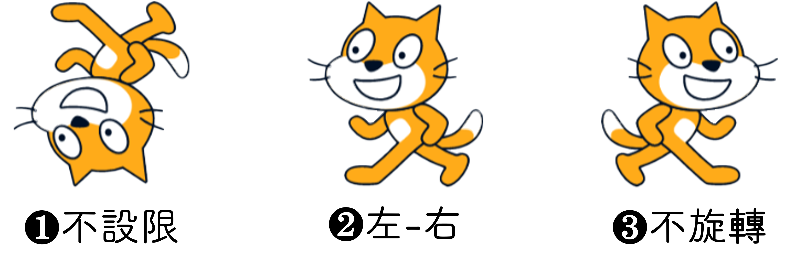

|
|
|---|
 迴 轉
迴 轉
在Scratch的《動作類》積木中，有一個〈迴轉〉積木，它可以控制角色面朝的方向。作用類似於〈左轉〉積木和〈右轉〉積木，都是在編程過程中使用的。而它就像是一個「定義」積木，定義該角色轉動時要使用什麼模式。
❶不設限（默認）：即是自由旋轉，任何角度角色都會轉向該值顯示。然而，當角色面向−90度時，它就會是上下顛倒的樣子。也就是當使用這種模式時，當角色碰到邊緣反彈（面朝角度加180度）後，就會是上下顛倒。
❷左−右：即是水平旋轉，角色只有向左（−90度）和向右（90度）二種面朝方向。如果角色的方向在0°到180°之間，則角色外觀不會出現旋轉。如果角色的方向在0°到-180°之間，角色外觀將會水平翻轉。
❸不旋轉：即是始終維持90度。在視覺外觀上不會隨著方向的改變而改變。

🔷角色不能以視覺外觀來判定它的面朝角度。比如，角色面朝90度，若使用〈迴轉−不旋轉〉積木，則當它直進碰到邊緣反彈後，它會是面向右方，但走向左方的。